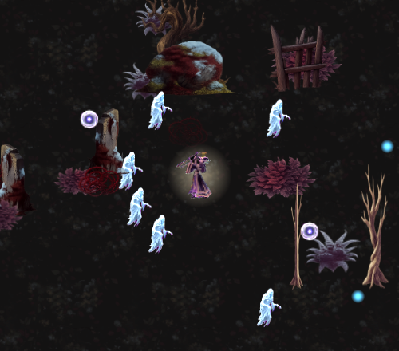

手搓廣告遊戲選集 · 吸血鬼復仇 · 星樞法輪
13 幀（抽 14 幀丟掉開場放大中的那一幀，不然每輪播放會彈一下大小）。 四個法輪的相位刻意錯開，不然看起來像貼在同一個轉盤上的四張貼紙。
法輪本身現在會動了——符文環在轉、核心在脈動，不是一張靜態圖被繞行軌跡拖著走。
外圈銀環順時針轉、內圈符文逆時針轉、中央紫晶核脈動明暗，環溝裡有淡紫能量流動。 規格跟其他特效素材對齊（256px、綠幕、本地去背）。

起始進度各差 3.7 幀。同步脈動的話，四個法輪看起來像貼在同一個轉盤上的 四張貼紙，不像四個各自運轉的法器。錯開之後才有「各自在轉」的感覺。
原始影片開場的那一幀是法輪還在放大中的：
第 1 幀 主體 72px ← 丟掉
其餘 13 幀 主體 113~134px
留著的話，法輪每播完一輪就會「彈」一下大小——那種瑕疵在單張截圖上看不出來， 要播起來才會發現。丟掉之後尺寸差只剩 21px。
所以最後是 13 幀，不是 14。
這一點很重要：素材載得到 ≠ 有接上去。載得到但沒接的話，
畫面上還是一張靜態圖被拖著走——而那正是你回報的問題。
所以驗證直接抓法輪的 SpriteRenderer，數它換過幾張不同的貼圖：
法輪動畫素材 astral_orb = 13 幀
2.5 秒內法輪換過 13 張不同的貼圖（共 13 幀） ✓ 法輪本身真的在動
同一段時間法輪繞行了 4.8 個單位 ✓ 繞行也還在
兩件事同時成立才算對——只有動畫沒繞行、或只有繞行沒動畫，都是壞的。
其餘星樞法師的功能一併回歸過：法輪 2 個（Lv1）、冷卻倍率 1.15、
orbKills 有增加。資料層全過、三輪編譯 0 錯。
美術 $0.32。
還沒出新 TestFlight——build 46 不含這批（以及前面的桃木劍改近戰、陣形辨識）。 要出 build 47 說一聲，我建議出，累積的東西已經不少了。
→ 上一頁：陣法看形狀了